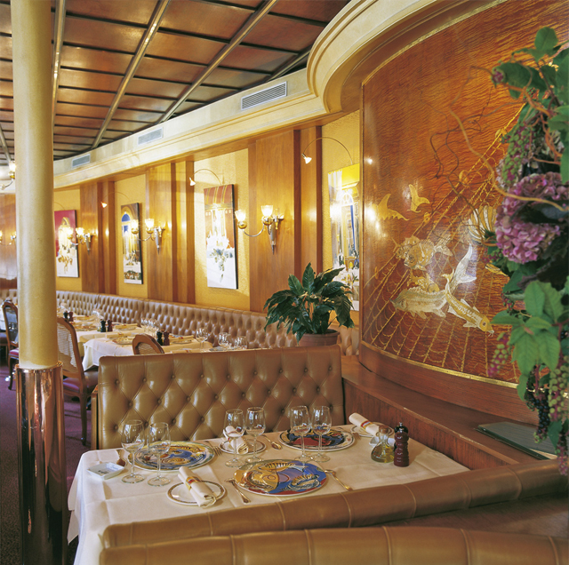
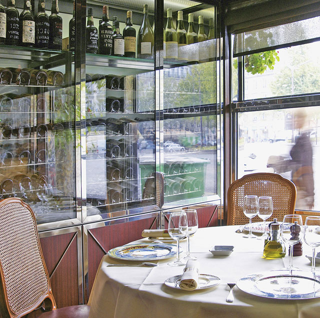

«Семью основателей звали Дэзири, – рассказывает директор рестора-на Филипп Жюдо, – и так как они имели корни в Париже и Бретани, то заведение было открыто в 1883 г. как кафе и устричный бар». Потом оно превратилось в брассерию. Однако когда звездный повар и ресторатор Мишель Ростанг ее приобрел, дела были уже расстроены. Ростанг вложил средства, отремонтировал и позаботился о возвращении в 1996 г. одной из самых изысканных брассерий Парижа. Интерьер, кухня «а-ля Ростанг» и обслуживание элегантны, это значит: готовность желание баловать гостя самым утонченным образом. Тема номер один – дары моря. Мосье Жюдо: «Dessirier был всегда знаменит лучшими устрицами в Париже, и сегодня это снова так». Но это далеко не все. Половина бретонского омара по-парижски (фото), карпаччо из морского волка, салат с раками – не менее желанные закуски. Как фирменное блюдо абсолютной популярностью пользуется рыба целиком: морская камбала, дорада, сен-пьер на две или три персоны – наслаждение испытываешь уже тогда, когда они мастерски разделываются перед гостем. В качестве дежурного блюда ежедневно подается французская классика, от дикой утки до телячьих почек, а также десерты – мильфей «Dessirier», суфле «du Jour», которые непременно нужно попробовать.


{kind=link}
{kind=link}